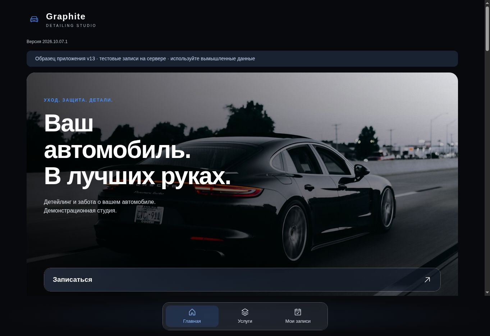
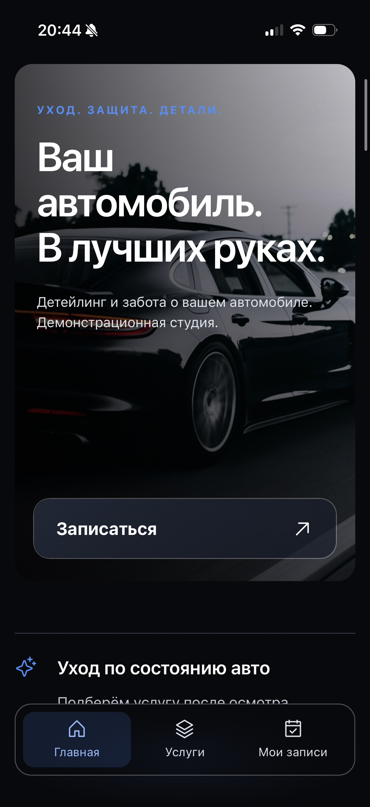
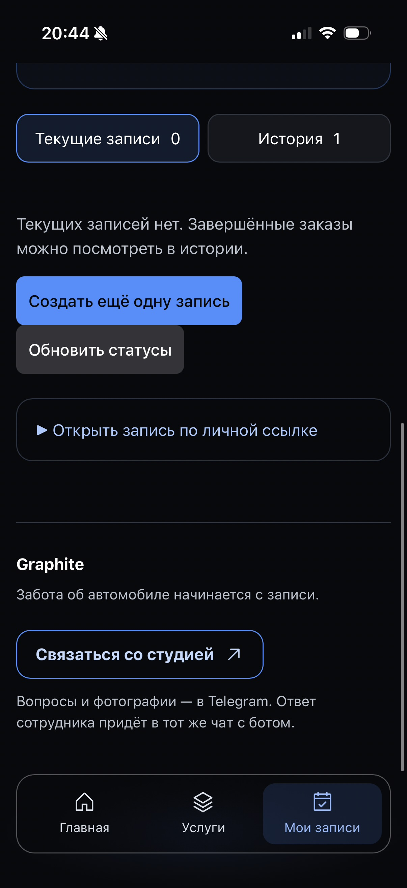
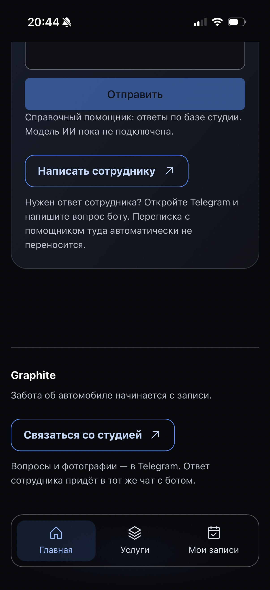
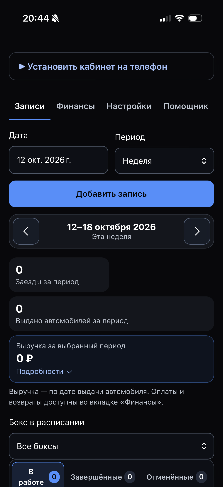
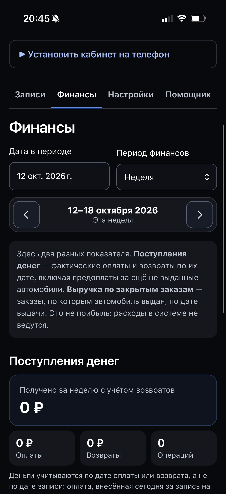
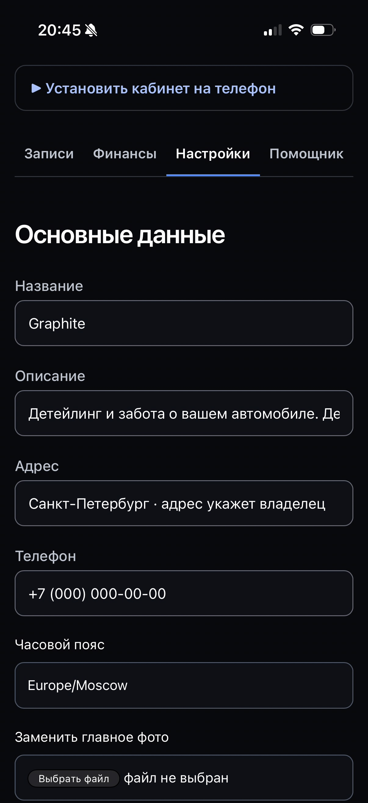

Веб-приложение · запись в автосервис
Graphite
Онлайн-запись для клиента. Управление заказами, боксами и оплатами для студии.

Задача
Собрать запись клиента и повседневную работу студии в одном сервисе: от выбора услуги до выдачи автомобиля.
Моя роль
Проектирование сценариев клиента и владельца, дизайн интерфейсов, адаптивная реализация и интеграция серверной логики с помощью ИИ-инструментов.
Пользовательские сценарии
- Клиент выбирает услугу и доступное время, оставляет пожелания и открывает свою запись.
- Владелец распределяет автомобили по боксам, фиксирует приём, готовность и выдачу.
- Оплаты и возвраты учитываются отдельно от выручки по выданным автомобилям.
- Изменения записи приходят через push после включения уведомлений; вопросы можно передать сотруднику через Telegram.
Клиентская часть на телефоне



Кабинет владельца на телефоне



Скриншоты демонстрационной студии. Показатели и контакты на экранах — тестовые.
Результат
Веб-приложение с клиентской записью и отдельным кабинетом студии. Приложение можно добавить на главный экран телефона.
Нужен похожий сервис для вашей задачи?
Обсудить задачу